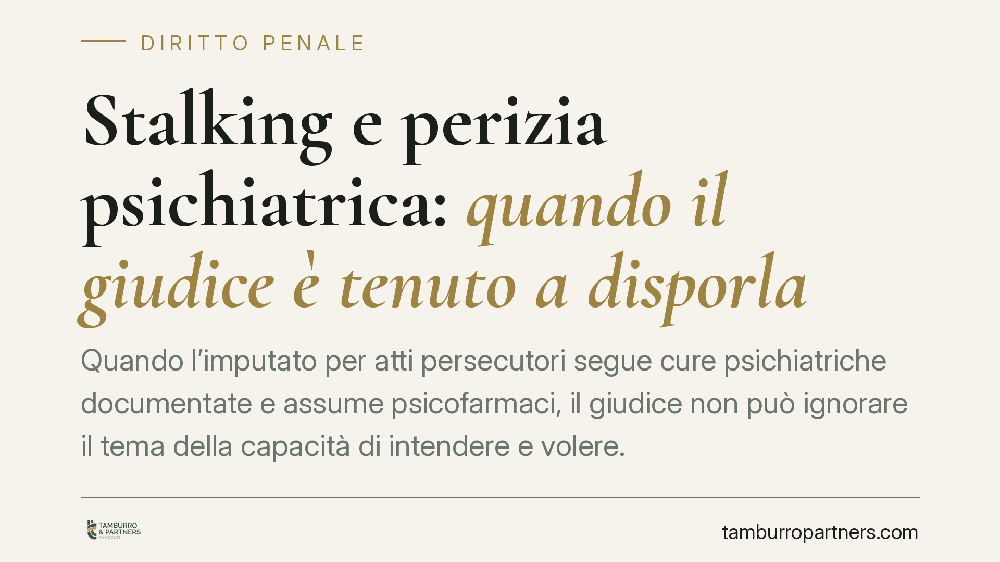

Stalking e perizia psichiatrica: quando il giudice è tenuto a disporla
Quando l'imputato per atti persecutori segue cure psichiatriche documentate e assume psicofarmaci, il giudice non può ignorare il tema della capacità di intendere e volere. Secondo l'orientamento della Cassazione, in presenza di questi elementi concreti la perizia psichiatrica diventa un passaggio dovuto. Vediamo perché conta e cosa cambia, sia per la difesa sia per la persona offesa.

Il caso: atti persecutori e infermità mentale
Nel reato di stalking la posizione dell'imputato che risulti in cura psichiatrica pone un problema delicato: fino a che punto il giudice può decidere sulla responsabilità senza accertare le condizioni mentali dell'autore del fatto?
La Corte di Cassazione ha chiarito un principio di metodo. Quando emergono elementi concreti e documentati — una terapia specialistica in corso, l'assunzione di psicofarmaci, attestazioni dello psichiatra curante — il giudice non può liquidare la questione come irrilevante. Deve disporre una perizia per verificare se, al momento dei fatti, la capacità di intendere e di volere fosse compromessa.
Non si tratta di un automatismo rigido, ma di un dovere che scatta in presenza di indici specifici: ignorarli significherebbe decidere al buio su un presupposto essenziale della responsabilità penale.
Inquadramento normativo
Il reato è disciplinato dall'art. 612-bis del codice penale, che punisce chi, con condotte reiterate di minaccia o molestia, cagiona nella vittima un perdurante stato di ansia o paura, un timore fondato per la propria incolumità o la costringe a mutare le proprie abitudini di vita.
Sul piano dell'imputabilità rilevano due norme distinte. L'art. 88 c.p. disciplina il vizio totale di mente: se al momento del fatto l'imputato era, per infermità, del tutto incapace di intendere o di volere, non è punibile. L'art. 89 c.p. disciplina invece il vizio parziale: se la capacità era grandemente scemata ma non esclusa, la pena è diminuita, ma la responsabilità permane.
La differenza è sostanziale. Il vizio totale esclude la condanna; il vizio parziale la riduce, ma non assolve.
I presupposti processuali della perizia
Lo strumento è la perizia, prevista dall'art. 220 del codice di procedura penale, che la ammette quando occorrono specifiche competenze tecniche o scientifiche. Lo stato mentale dell'imputato rientra tipicamente in questo ambito: non è un giudizio che il giudice possa svolgere da solo, in assenza di valutazione clinica.
Va tenuto distinto il profilo della capacità al momento del fatto (artt. 88 e 89 c.p.) da quello della capacità di partecipare coscientemente al processo, oggetto dell'art. 70 c.p.p. Si tratta di due accertamenti autonomi: un imputato può essere stato incapace all'epoca dei fatti e pienamente lucido in dibattimento, o viceversa.
Implicazioni pratiche
La perizia non è un passaggio a favore dell'imputato. È uno strumento di accertamento che può condurre a esiti opposti.
Il riconoscimento del vizio parziale, in particolare, non equivale a un beneficio. La riduzione di pena può accompagnarsi all'applicazione di una misura di sicurezza — ad esempio il ricovero in una struttura dedicata — qualora l'imputato sia ritenuto socialmente pericoloso. In concreto, l'esito può risultare più afflittivo e prolungato della sola pena detentiva.
Per la persona offesa, è importante chiarire un punto: la discussione sulla capacità di intendere e volere non sospende né azzera le misure cautelari eventualmente in atto (divieto di avvicinamento, allontanamento dalla casa familiare). La tutela resta operativa durante tutto il procedimento. L'accertamento sull'imputabilità incide sulla responsabilità, non sulle esigenze di protezione.
Si conferma così il bilanciamento tra due interessi: il diritto di difesa dell'imputato, che include il corretto accertamento della sua condizione, e la tutela della vittima, che non viene sacrificata dall'avvio della verifica peritale.
Cosa fare in concreto
- Documentare per tempo la condizione clinica. Cartelle, prescrizioni, relazioni dello psichiatra curante sono gli elementi concreti su cui si fonda la richiesta di perizia.
- Distinguere le linee difensive. La scelta tra l'eccezione del vizio di mente e altre strategie richiede una valutazione tecnica, perché il riconoscimento dell'infermità può comportare misure di sicurezza.
- Verificare lo stato delle misure cautelari. Chi ha subito le condotte deve sapere che le tutele restano in vigore a prescindere dalla questione sull'imputabilità.
- Valutare l'impatto delle misure di sicurezza. Prima di impostare la difesa sul vizio parziale, occorre considerare che l'esito può prolungare la restrizione della libertà.
- Controllare sempre gli estremi delle pronunce citate. Prima di fondare una scelta su un precedente, è buona prassi verificarne numero, anno e contenuto effettivo presso fonti ufficiali.
---
Contributo informativo a cura di Tamburro & Partners Avvocati – Avv. Giuseppe Tamburro. Non costituisce parere legale.
Ogni condominio ha una storia a sé.
Se gestisci un'amministrazione e vuoi un confronto su una specifica questione condominiale, scrivi allo studio. Ti rispondiamo entro un giorno lavorativo.